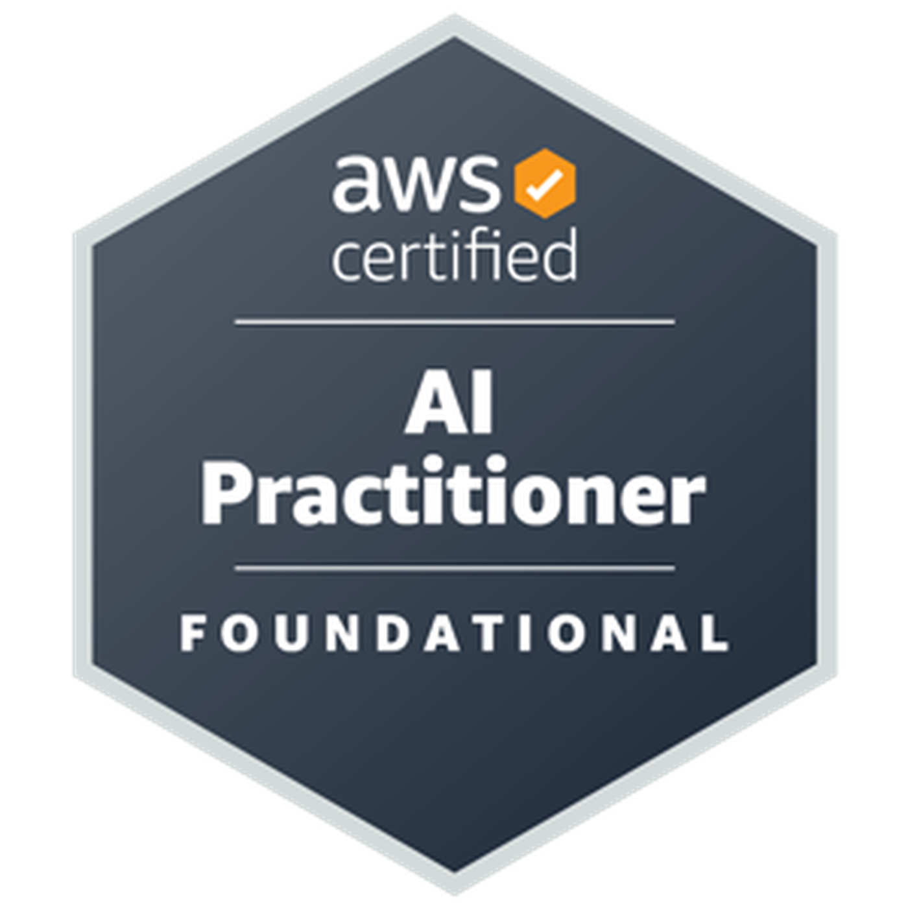

Certifications
Beyond formal certifications, I invest heavily in hands-on learning and practical skill development through labs, challenges, and real-world projects.
AWS Certifications

AWS Certified AI Practitioner
📜 View Certificate

AWS Certified Cloud Practitioner
📜 View Certificate

AWS Certified Solutions Architect – Associate
📜 View Certificate
Claude Certifications
Claude Certified Associate - Foundation
📜 View Certificate

Claude Certified Architect – Foundation
📜 View Certificate

Claude Certified Developer - Foundation
📜 View Certificate

Claude Certified Architect - Professional
📜 View Certificate